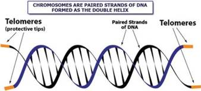
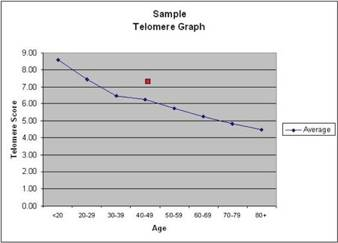
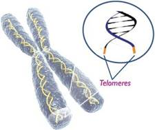

Exclusively at: Therapeutic Rehab Specialists Brandon & Lakeland offices
SPECIALTY TESTS
SpectraCell's Telomere Test can determine the length of a patient's telomeres in relation to the patient's age.
The first commercially available telomere analysis in the United States. A window to your cellular age.
What does Telomere Testing measure?
Telomeres are sections of genetic material at the end of each chromosome whose primary function is to prevent chromosomal “fraying” when a cell replicates. As a cell ages, its telomeres become shorter. Eventually, the telomeres become too short to allow cell replication, the cell stops dividing and will ultimately die - a normal biological process. SpectraCell’s Telomere Test can determine the length of a patient’s telomeres in relation to the patient’s age.

How are the results reported?
The Patient Telomere Score is calculated based on the patient’s telomere length on white blood cells (T-lymphocytes). This is the average compared to telomere length on lymphocytes from a sample of the American population in the same age range. The higher the telomere score, the “younger” the cells. A Telomere Score that is above the average line is desirable.

What do the results mean to the patient and the doctor?
Age adjusted telomere length is the best method to date to assess biological age using structural analysis of chromosomal change in the telomere. Serial evaluation of telomere length is an indicator of how rapidly one ages relative to a normal population. Therapies directed at slowing the loss of telomere length may slow aging and age-related diseases.

What are the nutritional implications on telomere length and repair?
An inflammatory diet, or one that increases oxidative stress, will shorten telomeres faster. This includes refined carbohydrates, fast foods, processed foods, sodas, artificial sweeteners, trans fats and saturated fats. A diet with a large amount and variety of antioxidants that improves oxidative defense and reduces oxidative stress will slow telomere shortening. Consumption of 10 servings of fresh and relatively uncooked fruits and vegetables, mixed fiber, monounsaturated fats, omega-3 fatty acids, cold water fish, and high quality vegetable proteins will help preserve telomere length. In addition, it is advised to reduce total daily caloric intake and implement an exercise program. Fasting for 12 hours each night at least 4 days per week is recommended.
What lifestyle modifications are likely to be helpful?
One should achieve ideal body weight and body composition with low body fat (less than 22 % for women and less than 16 % for men). Decreasing visceral fat is very important. Regular aerobic and resistance exercise for at least one hour per day, sleeping for at least 8 hours per night, stress reduction, discontinuation of all tobacco products are strongly recommended. Bioidentical hormone replacement therapy may decrease the rate of telomere loss.
When should retesting be considered?
Testing should be done once per year to evaluate the rate of aging and make adjustments in nutrition, nutritional supplements, weight management, exercise and other lifestyle modifications known to influence telomere length.
What role will nutritional supplements play in slowing telomere shortening?
Oxidative stress will shorten telomere length and cause aging in cellular tissue. Antioxidant supplements can potentially reduce oxidative stress very effectively, which will ultimately improve oxidative defenses, mitochondrial function, reduce inflammation and slow vascular aging. Targeted supplementation is key, as antioxidants work synergistically and must be balanced to work most effectively and avoid inducing a pro-oxidant effect. Increasing antioxidant capacity at the cellular level is critical to maintaining telomere length.
Recent evidence suggests that a high quality and balanced multivitamin will also help maintain telomere length. Specifically, studies have linked longer telomeres with levels of vitamin E, vitamin C, vitamin D, omega-3 fatty acids and the antioxidant resveratrol. In addition, homocysteine levels have been inversely associated with telomere length, suggesting that reducing homocysteine levels via folate and vitamin B supplementation may decrease the rate of telomere loss. Similarly, conditions such as cardiovascular disease, insulin resistance, diabetes, hypertension, atherosclerosis and even dementia affect telomere length. Correcting subclinical nutritional deficiencies that may contribute to such diseases is crucial for telomere maintenance.
What pharmacologic treatments are known to slow telomere aging?
- Angiotensin converting enzyme inhibitors (ACEI)
- Angiotensin receptor blockers (ARB)
- Renin Inhibitors
- Statins
- Possibly Calcium channel blockers
- Possibly Serum aldosterone receptor antagonists
- Possibly metformin
- Aspirin
- Bioidentical Hormone Replacement Therapy
Control all known coronary heart disease risk factors to optimal levels
- Reduce LDL cholesterol to about 70 mg %, decrease
- LDL particle number and increase LDL particle size.
- Reduce oxidized LDL.
- Increase HDL to over 40 mg % in men and over 50 mg % in women and increase HDL 2 subfraction. Reduce inflammatory HDL and increase protective HDL.
- Reduce fasting blood glucose to less than 90 mg % and 2 hour post prandial or 2 hour GTT to less than 110 mg %. Keep Hemoglobin A1C to about 5.0% and keep insulin levels low.
- Reduce blood pressure to about 120/ 80 mm Hg
- Reduce homocysteine to less than 8 um/L
- Reduce HS-CRP to less than 1.0
- Maintain ideal body weight and composition.
- Stop smoking.
- Treat insulin resistance and metabolic syndrome.
Overall recommendations to maintain telomere length
Some clinicians have recommended reducing all known coronary risk factors, inflammation, oxidative stress, ADMA levels and angiotensin II levels or its action. At the same time, therapy should increase nitric oxide levels and nitric oxide bioavailability, increase arginine, increase endothelial progenitor cells, improve mitochondrial function and increase oxidative defenses. In addition, one should optimize hormone levels, exercise, sleep, nutrition and nutritional supplements. Fasting and caloric restriction should be part of the regimen as well.
Components:
Telomeres are sections of genetic material at the end of each chromosome whose primary function is to prevent chromosomal “fraying” when a cell replicates. As a cell ages, its telomeres become shorter. Eventually, the telomeres become too short to allow cell replication, the cell stops dividing and will ultimately die - a normal biological process. SpectraCell’s Telomere Test can determine the length of a patient’s telomeres in relation to the patient’s age.
SpectraCell's Telomere Test analyzes:
- Lysis of Cells
- DNA Extraction
- Amplification